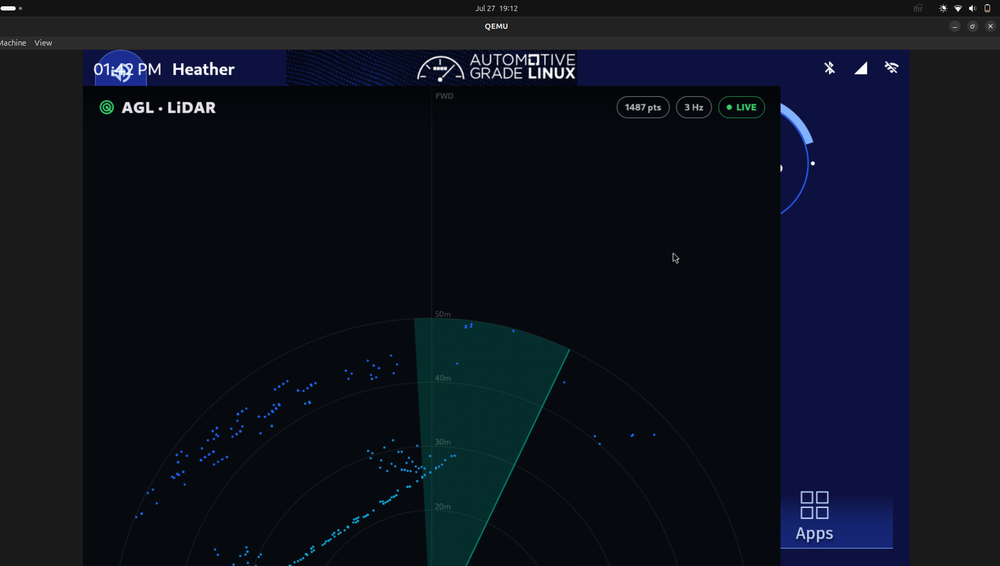

Every week so far has ended with the same shape of result: a live sensor stream arriving somewhere, read by a small text client. This week the client became the real thing. A Flutter HMI application, running on AGL, drawing a bird's-eye radar view of a real recorded CARLA LiDAR scan.
The project's opening diagram has always ended in the same box: an AGL dashboard application drawing what the car sees. Weeks 1 through 8 built and proved everything that leads up to that box. The simulator, the perception, the bridge, the transport, and finally the move onto real Jetson hardware. But the box itself, the HMI, stayed a stand-in. Right up to last week the AGL side of the pipeline was a 73-line standard-library WebSocket client that printed numbers to a terminal. It proved the data arrived. It did not draw anything.
This week that box got built.
The way you build a car HMI is not by rebuilding the whole operating system image every time you change a colour. The workflow my mentor pointed at is the one real embedded UI teams use: write the app in an editor on your laptop, and push it live onto the running target, updating in place while it runs. Flutter calls this hot reload.
The catch is that the target is AGL, and I did not want app iteration to be blocked on the Jetson being on my desk and flashed. So I set up the exact same loop against AGL running in QEMU on the laptop, using the same AGL release the Jetson runs (unagi 21.0.1, qemux86-64), with the same Flutter engine version baked into the image. What works here works there.
Registering the QEMU AGL target as a Flutter device took some plumbing: a small set of helper scripts that push the built app bundle in over SSH, launch the AGL Flutter embedder on the compositor, and tunnel the debug port back so hot reload can attach. The engine version on the laptop has to match the one inside the image exactly or the reload handshake fails. Once that lined up, the payoff was immediate. Change a line, press one key, and the running dashboard updates in about a third of a second. That is the loop the rest of the week was built on.
Why this matters This is not a throwaway convenience. The Jetson deployment next week uses the identical mechanism, just pointed at a real board over the network instead of a virtual one over local ports. Proving the loop on the emulator means the only new variable on the Jetson is the Jetson.
The application is a bird's-eye LiDAR view. The car sits at the centre, forward is up, and the surrounding returns are plotted as points on a set of range rings out to 50 metres, coloured by distance so nearby objects read warm and far ones read cool. A slow radar sweep rotates over the top so the display looks alive even when a frame is holding. A status line reports how many points are in the current frame and the update rate.
It has two sources. A simulated mode generates a synthetic rotating scan of a corridor with moving obstacles, which is useful as an always-on demo that needs nothing connected. And a live mode that subscribes over rosbridge and draws real sensor frames. The interesting engineering is in the live path, because CARLA's LiDAR arrives as a sensor_msgs/PointCloud2, which rosbridge hands over as a base64-encoded blob of binary. The app decodes that blob directly: it reads the x, y, z and intensity floats out of each point by their declared byte offsets, drops the ground and roof returns by height so the top-down view stays clean, and projects the rest to the ground plane. That decoder is what turns the raw pipe from the earlier weeks into an actual picture.
To drive the live mode with genuine data rather than the synthetic scene, I needed a CARLA LiDAR recording. There were none, so I made one. On the server, CARLA plus the two-process bridge from Week 5 publishes /carla/lidar, and a rosbag recording captured a stretch of it to a file. That file can now be replayed forever, with no CARLA and no GPU required, which is exactly what a repeatable demo wants.
Two things had to be worked around to get the bag. CARLA on the GPU-less server renders in software, so its LiDAR only completes about a third of a rotation per second: the raw capture is genuine but slow. Replaying the bag on a loop with a speed multiplier smooths that back up to a livelier rate for the display. And the original bridge script wedged on this server at CARLA's synchronous-mode handshake, so I wrote an asynchronous variant that streams the sensor without that step. With those in place, the bag loops into rosbridge, and the app, pointed at that stream, comes up green and draws the recorded scan.

The application renders, it goes live, and it draws real data. What it does not yet do is fit on the screen. As the screenshot shows, the radar's centre and the bottom control bar run off the edge of the display.
The cause is specific. AGL's compositor forces the application to full screen at a fixed 1920 by 1080, and it ignores requests from the app to run at any other size. On the laptop, once the window's title bars are accounted for, the bottom of that 1080-tall surface is pushed past the edge and clipped. The content is all being drawn correctly, it is simply drawn onto a canvas taller than the visible area. Scaling the whole emulator display to fit the screen makes the full picture visible, but that is a workaround at the display layer, not a fix in the app.
Stand and deliver This is the current honest state. The hard parts are done: the dev loop works, the PointCloud2 decoder works, and real CARLA data reaches the dashboard and renders. The remaining defect is a layout and display-fit problem, not a pipeline problem. It is annoying, it is visible, and it is next week's first job.
Status: the HMI application exists. It runs on AGL, it hot-reloads for fast iteration, and it draws a real recorded CARLA LiDAR scan in a live bird's-eye view over the same rosbridge transport the whole project is built on. The pipeline's final box is no longer a placeholder.
Week 8 named the HMI application as the largest open piece of the whole project. This week it stopped being open. What is left is to make it sit properly on the screen and to run it where it is meant to run.